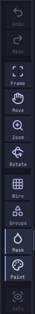

Navigating the view
This chapter explains how to rotate, pan and zoom the camera with a mouse, a pen, the right-shelf buttons or a 3Dconnexion SpaceMouse, how to frame the model, and which display toggles help while you sculpt.
How the camera works#
The camera orbits around a target point. By default rotation is free, as in ZBrush: dragging turns the model about the screen's own axes, so it follows the cursor and can roll right over the top. Hold Shift while rotating to snap to the nearest front, back, side, top or bottom view; let go of Shift and the drag carries on from where the cursor is. If you prefer the model to stay upright, as in Blender or Maya, set Edit > Preferences > Interface > Rotation to Turntable: sideways drags then turn the model around its vertical axis and up-down drags tilt it, stopping just short of looking straight down or up.
Panning moves the target; zooming moves the camera closer to it or further away. The view is a perspective view with a 35 degree field of view, or orthographic (Numpad 5): no foreshortening, so sizes don't shrink with depth. The front, side and top views (Numpad 1, 3, 7) switch to orthographic until you rotate again, as in Blender.
The X / Y / Z gizmo in the top left of the canvas (Sculpt > Draw & Tablet > Camera > Axes) shows the world axes as the camera sees them. Click an end to look from that side, as in Blender: X the right view, Y the top, Z the front, and the plain dot at the other end of each axis the left, bottom or back view. These are orthographic like the numpad views. The end under the pointer gets a ring.
Sculpt > Draw & Tablet > Camera > Gizmo size makes the axes Small, Medium (the default) or Large; they grow with the UI scale too, and clicking an end works at every size. View Figure (beside Axes, off until you turn it on) adds a small shaded head in the corner that turns with the camera, so you can tell front from back at a glance. Click it to look from the nearest side: the front, back, left, right, top or bottom view, orthographic like the axes.
Navigation starts only on the canvas. A drag that begins on a shelf, a tray or a palette never moves the camera.
Mouse and pen#
| To | Do this |
|---|---|
| Rotate | Left-drag on the background, or right-drag anywhere on the canvas; add Shift to snap to an axis view |
| Roll (turn about the view axis) | Shift+click the background, let go of Shift, then drag (ZBrush) |
| Pan | Alt+left-drag on the background, Alt+right-drag, or middle-drag |
| Zoom | Mouse wheel; Alt+left-drag on the background, then let go of Alt and keep dragging; Ctrl+right-drag; Ctrl+middle-drag; Ctrl+left-drag on the background when nothing is masked (not with the ZBrush-style keys) |
| Frame the model | F (Blender style: Home), or Frame on the right shelf |
| Front, right, top view | Numpad 1, Numpad 3, Numpad 7; Ctrl for the back, left and bottom |
| Front, side, top or bottom view with the mouse | Click an end of the axis gizmo in the canvas corner |
| Orthographic on or off | Numpad 5 |
| Turn in 15 degree steps | Numpad 4 / Numpad 6 (around), Numpad 8 / Numpad 2 (over); Numpad 9: the other side |
| Frame the active Part | Numpad . |
| Frame one Part | Shift+Alt+click it, or triple-click another Part (it becomes the active Part) |
| Sculpt from the background | Turn on Edit > Preferences > Input > Start strokes off the model, View > Lock camera, or press Shift+L: a left-drag that starts beside the model sculpts once it reaches the surface |
| Move the camera with Space held | Turn on Edit > Preferences > Input > Hold Space and drag to move the camera, then hold Space: left-drag rotates, right- or middle-drag pans, Ctrl+drag zooms, anywhere on the canvas (on the model too) |
Zoom drags: drag up to come closer, down to back away. With the ZBrush-style keys (Edit > Preferences > Input) they go the ZBrush way: drag up to zoom out, down to zoom in.
Hold Space and drag to move the camera is off by default, because in ZBrush Space opens the Quick Menu. With it on, Space no longer opens the Quick Menu (a right click still does), and a space typed in a text field is never taken.
Start strokes off the model (also View > Lock camera) is off by default. With it on (a label at the top of the canvas says so, and in the SculptForge layout the status bar shows CAMERA LOCKED), a left-drag on the background no longer rotates: it waits, and the brush starts where the cursor first reaches the model, so strokes that begin at the silhouette never turn the view by accident. Ctrl (mask) and Shift (smooth) strokes start the same way, and a Ctrl+click on the background still inverts the mask. To move the view, right-drag (a pen's lower button is a right click by default), Alt+drag to pan, middle-drag, or hold Space if Hold Space and drag to move the camera is on; with the Blender or Maya style, Alt+left-drag rotates as before. With a pen that has no buttons and the ZBrush or SculptForge style, press Shift+L to turn it off while you rotate, or turn on Hold Space. Mask Lasso, Mask Rectangle and the Ctrl+Shift hide and show shapes work as before.
"Background" means any part of the canvas where the cursor isn't over the model. A left-drag that starts on the model sculpts instead, so with a pen or a one-button mouse, start rotations beside the model. When the model fills the view, zoom out a little or use the right-shelf buttons.
On macOS, Cmd works wherever this guide says Ctrl for these gestures, except Ctrl+middle-drag, which needs Ctrl itself.
The right-shelf navigation buttons#
The right shelf has three buttons you drag on rather than click, as in ZBrush. They are handy with a pen, on a laptop trackpad, or when the model fills the canvas and there is no background to drag on.


| Button | Drag on it to |
|---|---|
| Frame | (click) Fit the whole scene in the view (F) |
| Move | Pan the view |
| Zoom | Zoom: drag up to come closer, down to move away |
| Rotate | Orbit the view |
The button stays orange while you drag. Frame is also in the View menu and Sculpt > Symmetry & Gizmo.
SpaceMouse (experimental)#
A 3Dconnexion SpaceMouse lets one hand move the view while the other holds the pen. SculptForge reads it directly as a USB device, without 3Dconnexion's driver or SDK, so this is experimental: it has been tested with simulated input only, not yet with a real SpaceMouse. Tell us how it works with yours (GitHub issue #6).
Plug it in and it works: Edit > Preferences > Input shows its name under SpaceMouse (experimental), with live bars for its six axes. The model moves the way you move the cap, and turns about the same point the mouse orbits around (the camera's target: Frame sets it to the scene's centre, and panning moves it).
| Move the cap | The view |
|---|---|
| Push left / right | Pans left / right |
| Pull up / push down | Pans up / down |
| Pull towards you / push away | Zooms in / out |
| Twist | Turns the model around |
| Tilt towards you / away | Tips the model's top towards you / away |
| Roll left / right | Rolls the model on screen (not with Lock rotation to turntable) |
| Left side button | Frame |
| Right side button | Front view |
The speed is the same whatever the frame rate: holding the cap for a second turns the model just as far on a slow machine as on a fast one. It works in every input style (SculptForge, ZBrush-style, Blender, Maya) and while a stroke is held: the stroke keeps going, sculpting wherever the pen points on the turned model. Many people stop moving the pen while they turn the view, and that works best, but you don't have to.
Edit > Preferences > Input > SpaceMouse:
- Use SpaceMouse: off ignores it completely, buttons too.
- Speed: how fast the view moves for the same push.
- Dead zone: how far the cap must move before anything happens (8% by default), so a hand resting on it doesn't drift the view. The live bars turn orange once an axis is past it.
- Lock rotation to turntable: the model stays upright; twisting turns it about the world's up axis and rolling the cap does nothing.
- Dominant axis: only the direction you push the most moves the view, so a twist doesn't also pan a little.
- Invert: reverse any of the six moves (Pan X, Zoom, Pan Y, Tilt, Roll, Spin). If a direction feels wrong on your model of SpaceMouse, flip it here.
- Left button, Right button (and Button 3 onwards on models with more): Frame, Frame Part, the axis views, Orthographic, Undo, Redo or Nothing.
- SpaceMouse defaults puts everything back.
Store Config (Ctrl+Shift+I) keeps these settings.
If SculptForge doesn't see it (Preferences says "No SpaceMouse found"):
- Windows: 3Dconnexion's driver, 3DxWare, can keep the device to itself, and may also move the view on its own as it does in other programs. Quit 3DxWare (its tray icon, or stop the 3DxService service in Task Manager > Services), unplug the SpaceMouse and plug it back in. Without 3DxWare, Windows treats the SpaceMouse as a game controller, which is how SculptForge reads it. If SculptForge sees the SpaceMouse with 3DxWare running, give the buttons a job in only one of the two places, or one press does two things.
- macOS: the same applies to 3DxWare for Mac: quit it (or uninstall it) and plug the SpaceMouse in again.
-
Linux: if spacenavd is running, it normally opens the device exclusively. SculptForge may still list the SpaceMouse but get no motion from it. Stop it while you sculpt (
sudo systemctl stop spacenavd). SculptForge reads the device through/dev/inputas a joystick: that works when the kernel reports the cap's axes as absolute axes, which is how joysticks work. If the kernel reports them as relative motion, as it does for some older models, the SpaceMouse doesn't show up at all. Reading it through spacenavd isn't supported yet.
SculptForge recognises 3Dconnexion devices by their USB ids: everything under 3Dconnexion's own vendor id (SpaceMouse Compact, Wireless, Pro, Enterprise, Module, the Universal Receiver) except the CadMouse and the keyboards, and the older models sold under Logitech's id (SpaceNavigator, SpacePilot, SpaceExplorer, SpaceMouse Pro, SpaceBall 5000).
Framing#
Frame (F) points the camera at the centre of the scene and moves it back until everything fits: every visible Part, plus the Gaussian splats when they are shown. SculptForge frames the scene for you when you open a file or start from a new primitive. Use it after panning far away, or when a model comes in at an unusual scale.
Display toggles that help navigation#
These live on the right shelf and in the View menu:
- Wire (Shift+F): shows the polygons of the active Part over the surface, ZBrush's PolyFrame. Quads show as quads (see Quads and triangles). Useful for judging mesh density before you subdivide or remesh.
- Groups: colours each face group.
- Mask: darkens masked areas.
- Paint: shows vertex paint colours (off shows the plain material).
- Solo: shows only the active Part, to get at parts hidden behind others.
- Show Mesh (View menu): hides the sculpt, for example to look at a splat capture on its own.
Fullscreen (F11) and hiding the shelves (Tab) give the canvas the most room. See The interface.